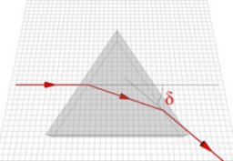
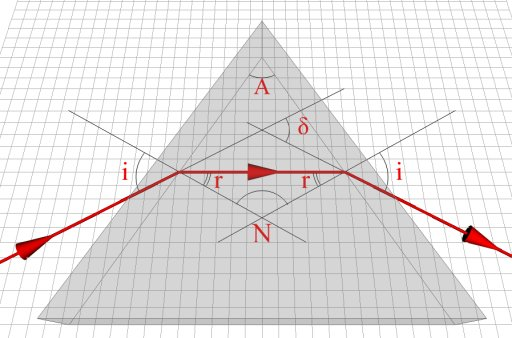
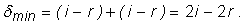
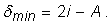
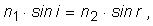
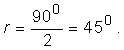
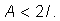
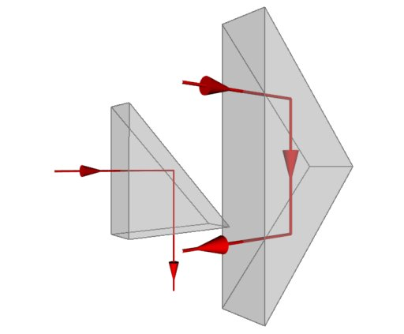

Prisma optică
O prismă optică este un corp de forma unei prisme, realizat dintr−un material cu bune calităţi optice (omogenitate, transparenţă), având
feţele bine şlefuite, pentru a fi aduse cât mai aproape de idealul unor feţe plane.
Cu o prismă optică poţi controla eficient drumul luminii.
 Activitatea experimentală 1
Activitatea experimentală 1
Investighează devierea luminii printr−o prismă optică. Lucrează în echipă.
Pasul 1. Fixaţi laserul astfel ca acesta să trimită lumina razant la suprafaţa mesei.
Asiguraţi−vă că lumina laserului nu pătrunde accidental în ochii cuiva!
Pasul 2. Aşezaţi pe o foaie de hârtie, în calea luminii, o prismă optică cu secţiunea triunghi echilateral (din trusa de optică).
Urmăriţi lumina care se refractă succesiv, de două ori prin prismă şi ajunge pe un obstacol (o foaie de hârtie), la o distanţă cât mai mare de prismă
(figura 1).

Fig. 1.  Traseul luminii care se refractă succesiv, de două ori, prin prismă.
Traseul luminii care se refractă succesiv, de două ori, prin prismă.
Raza emergentă (cea care iese din prismă, după cea de−a doua refracţie), este deviată faţă de raza incidentă pe prismă cu unghiul δ
(figura 1).
Pasul 3. Cineva din echipă să rotească lent prisma. Observaţi deviaţia luminii.
Găsiţi poziţia prismei pentru care deviaţia este minimă. Marcaţi, în această poziţie, conturul prismei şi direcţiile incidentă şi emergentă ale luminii.
O prismă optică deviază considerabil lumina, care se refractă succesiv de două ori prin prismă.
Există însă o poziţie a prismei pentru care deviaţia este minimă. În condiţii de deviaţie minimă, drumul luminii prin prismă este simetric: unghiurile de
incidenţă şi emergenţă au măsuri egale (figura 2).

Fig. 2.
Traseul luminii prin prismă, la deviaţie minimă.
Cu notaţiile din figura 2, măsura unghiului de deviaţie minimă este:

Unghiul prismei A şi unghiul N sunt suplementare. Aşadar:
Astfel, măsura unghiului de deviaţie minimă este:

Măsura unghiului de incidenţă, la deviaţia minimă, este:
Aplicând legea lui Snell, în punctul de incidenţă I, avem:

unde n1 este indicele de refracţie al mediului în care se află prisma, iar n2 este indicele de refracţie al materialului
prismei.
Măsura unghiului de incidenţă, la deviaţie minimă, este dată de relaţia (2), iar măsura unghiului de refracţie este dată de relaţia 1). Obţinem, astfel:
Relaţia (3) permite obţinerea cu mare precizie a indicelui de refracţie al materialului din care este confecţionată prisma.
În condiţiile unui laborator bine echipat, pot fi obţinute astfel chiar şase zecimale ale indicelui de refracţie!
Precizia mare a măsurătorilor este datorată faptului că, în jurul deviaţiei minime, o mică imprecizie de poziţionare a prismei nu afectează considerabil
deviaţia luminii. Astfel, precizia determinării indicelui de refracţie nu este afectată considerabil de imprecizia măsurării deviaţiei minime δmin.
 Provocarea 1
Provocarea 1
Cât este indicele de refracţie al materialului din care este confecţionată prisma folosită de tine în activitatea experimentală 1?
Activitatea experimentală 2
Investighează trecerea luminii printr−o prismă de sticlă având secţiunea un triunghi dreptunghic isoscel (din trusa de optică). Lucrează în echipă.
Pasul 1. Obţineţi condiţiile de deviaţie minimă prin prismă, trimiţând lumina pe faţa prismei care corespunde ipotenuzei triunghiului de la bază.
Pasul 2. Măsuraţi unghiul de deviaţie minimă şi calculaţi indicele de refracţie al sticlei din care este confecţionată prisma.
Pasul 3. Încercaţi să obţineţi condiţiile de deviaţie minimă, trimiţând lumina pe una dintre feţele care corespund unei catete. Este posibil?
Când lumina este trimisă printr−una dintre feţele care corespund unei catete, simetric prin prismă, unghiurile r sunt, conform relaţiei (1),
jumătate din unghiul de la vârful prismei. În cazul acestei prisme,

Acest unghi este mai mare decât unghiul limită pentru reflexia totală sticlă−aer, astfel că lumina se reflectă total pe cealaltă faţă a
prismei şi nu pot fi obţinute condiţiile de deviaţie minimă.
Pentru a mai avea lumină emergentă, în condiţii de trecere simetrică a luminii prin prismă, este necesar ca unghiul de la vârful prismei să fie mai mic
decât dublul unghiului limită:

Aceasta este condiţia de emergenţă pentru deviaţie minimă.
Provocarea 2
Cum ai putea folosi o prismă de sticlă, cu baza triunghi dreptunghic isoscel, pentru a devia lumina cu 900?
Dar cu 1800
Unghiul limită pentru sticla obişnuită este aproximativ 430. În situaţiile din figura 3, lumina care înâlneşte interfaţa sticlă−aer,
o face sub un unghi de 450, mai mare decât unghiul limită. Astfel, lumina se reflectă total, şi deviază aşa cum este indicat în figura 3.

Fig. 3.
Reflexii totale în prismă.
Prismele optice sunt utilizate frecvent în aparatura optică, pentru devierea luminii pe o direcţie convenabilă.